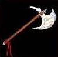

|  |
|
|
|
|
This item is found on level 4 or deeper, and is ONLY dropped by specific monsters.
(Commonality value of 0)
This item can be dropped by:
Dwarven Lord,
Use your browser's BACK button to get back